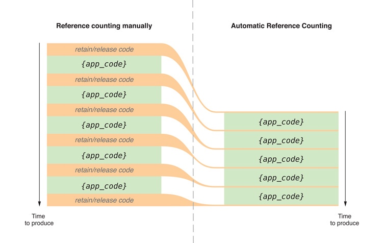
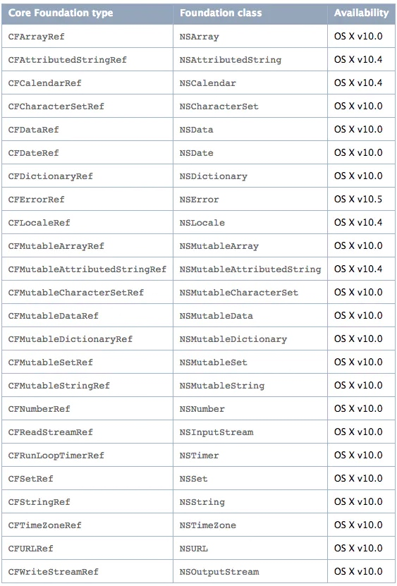

过渡到 ARC 的发布说明
太忙了，这篇官方文档的译文断断续续写了两三个月，终于写完了。
本文翻译自 Transitioning to ARC Release Notes。意译，并补充了一些理解和说明。
在 iOS MRC 内存管理的基本原则 和 iOS MRC 内存管理的实用技巧 之后，终于可以讲到 ARC 了。
ARC 的全称是 Automatic Reference Counting，自动引用计数。
之前聊 MRC 时提到，管理引用计数这个工作，不应该交给开发者去做，太繁琐，而且容易出错。完全可以放到编译器去做。ARC 就是这样，会在编译期自动帮助开发者添加合适的内存管理代码。
开发者再也不同到处 retain release 了！

如图所示，在编译期，会自动加上 retain release 等内存管理代码，开发者只需要专注于开发业务逻辑即可。
ARC 的版本兼容
提到新功能，就不得不提兼容性。最坑的就是要兼容旧版本。ARC 倒是很舒服了，目前微信这种超级 APP 已经最低支持 iOS 10 了，而且 XCode 也发布了 11.5 正式版，已经完全支持 ARC 了，所以不需要兼容旧版本。
ARC 一览
ARC 的新规则
ARC 规定了一些和 MRC 不同的规则，如果开发者未遵循，则会直接无法编译通过。
- 不可以直接调用 dealloc 方法，不可以调用和实现 retain、release、retainCount、autorelease。
- 可以实现 dealloc 方法做一些释放资源的逻辑，但是不可以调用 [super dealloc]，否则无法编译通过。对 super 的调用由编译器自动完成。
- ARC 是适用于 OC 对象，Core Function 对象的内存管理还要继续使用 CFRetain, CFRelease 等方法。
- 不可以使用 NSAllocateObject 和 NSDeallocateObject，创建对象使用 alloc，释放对象由系统自动完成。
- 不可以使用 C 结构的对象指针，不能使用 struct，而是使用 OC 的类作为替代。
- id 和 void * 之间不能随意转换。在 Cocoa 和 Core Function 对象交互时需要处理内存管理问题，参考后面提到的「管理 TFB」。
- 不能使用 NSAutoreleasePool，可以使用 @autoreleasepool 块，后者比前者更高效。
- 不再需要使用 NSZone，新的 OC 运行时会忽略 NSZone。
为了和 MRC 的代码共存，ARC 在函数命名上加了一些限制：
- getter 的函数名不能以 new 开头，比如声明一个属性，属性名不能以 new 开头，除非特殊指定 getter 的名字。
// Won't work:
@property NSString *newTitle;
// Works:
@property (getter=theNewTitle) NSString *newTitle;
ARC引入了新的生命周期限定符
ARC引入了一些对象的生命周期限定符，以及弱引用。弱引用不会让对象的引用计数 +1，并且在对象被释放时弱引用会自动变成 nil。
ARC 并不能防止循环引用的出现，可以使用弱引用解决这个问题。
Property 的属性
增加了 strong 和 weak 两种属性，其中对象默认是 strong 的。
// The following declaration is a synonym for: @property(retain) MyClass *myObject;
@property(strong) MyClass *myObject;
// The following declaration is similar to "@property(assign) MyClass *myObject;"
// except that if the MyClass instance is deallocated,
// the property value is set to nil instead of remaining as a dangling pointer.
@property(weak) MyClass *myObject;
变量限定符
ARC 增加了下面几种限定符：
- __strong 默认值，只要有指针指向，就不会被释放
- __weak 不持有对象，指向一个对象时不影响对象的回收，对象被回收后变成 nil，常用于处理循环引用问题
- __unsafe_unretained 不持有对象，指向一个对象时不影响对象的回收，对象被回收后变成野指针，常用于处理循环引用问题
- __autoreleasing 在最近的自动释放池结束的时候被释放，常用于函数中传入二级指针 id *
限定符的正确用法格式如下：
ClassName * qualifier variableName;
例如：
MyClass * __weak myWeakReference;
MyClass * __unsafe_unretained myUnsafeReference;
其他形式都是无效的，会被编译器忽略。
在使用 __weak 的时候要注意对象被立即释放的问题：
// string 的引用计数为 0，会被自动释放
NSString * __weak string = [[NSString alloc] initWithFormat:@"First Name: %@", [self firstName]];
NSLog(@"string: %@", string);
关于二级指针 id *，有个点需要留意下。
NSError *error;
BOOL OK = [myObject performOperationWithError:&error];
if (!OK) {
// Report the error.
// ...
上面这段代码很常见，其中 &error 是二级指针，编译器会自动加上 __autoreleasing 的逻辑。编译后的代码会变成这样：
NSError * __strong error;
NSError * __autoreleasing tmp = error;
BOOL OK = [myObject performOperationWithError:&tmp];
error = tmp;
if (!OK) {
// Report the error.
// ...
使用生命周期限定符来避免循环引用
使用生命周期限定符可以避免循环引用。例如，比较典型的例子：一个 Parent 类需要持有一个 Child 类，而 Child 类同时也需要持有 Parent 类，这种是经典的循环引用关系。为了解决这个问题，我们可以让 Parent 强持有（strong）Child，让 Child 弱持有（weak）Parent。
上面的 Parent - Child 结构是最简单直观的例子。还有一些隐性持有的场景，会更加不易发现。比如 Block 引用了 Self，但并不是那么直观。
关于 __block 修饰符，在 MRC 中，__block id x 中 x 的引用计数不会增加，但是在 ARC 中，x 的引用计数会增加。可以使用 __unsafe_unretained __block id x 来达到不增加引用计数的目的。顾名思义，__unsafe_unretained 不会 retain x（也就是不会增加引用计数），但是是 unsafe 的，当对象被释放后，x 就变成了野指针。
常见的两种方式是，使用 __weak 修饰符，或者在 block 执行完毕后将 x 设为 nil。
在 MRC 中，有以下这种写法：
MyViewController *myController = [[MyViewController alloc] init…];
// ...
myController.completionHandler = ^(NSInteger result) {
[myController dismissViewControllerAnimated:YES completion:nil];
};
[self presentViewController:myController animated:YES completion:^{
[myController release];
}];
可以增加 __block 修饰符，在 block 的末尾将对象置为 nil：
MyViewController * __block myController = [[MyViewController alloc] init…];
// ...
myController.completionHandler = ^(NSInteger result) {
[myController dismissViewControllerAnimated:YES completion:nil];
myController = nil;
};
也可以使用 __weak，这样就不用手动置为 nil 了：
MyViewController *myController = [[MyViewController alloc] init…];
// ...
MyViewController * __weak weakMyViewController = myController;
myController.completionHandler = ^(NSInteger result) {
[weakMyViewController dismissViewControllerAnimated:YES completion:nil];
};
使用 __weak 就没了循环引用的问题，所以在 block 中要先判空：
MyViewController *myController = [[MyViewController alloc] init…];
// ...
MyViewController * __weak weakMyController = myController;
myController.completionHandler = ^(NSInteger result) {
MyViewController *strongMyController = weakMyController;
if (strongMyController) {
// ...
[strongMyController dismissViewControllerAnimated:YES completion:nil];
// ...
}
else {
// Probably nothing...
}
};
建议使用 __weak，如果使用 __unsafe_unretained，就要防止野指针的问题。
在 ARC 中使用自动释放池
在 ARC 中不能使用 NSAutoreleasePool，取而代之的是 @autoreleasepool block。
@autoreleasepool {
// Code, such as a loop that creates a large number of temporary objects.
}
这个结构会让编译器跟踪对象的引用技术状态，在 @autoreleasepool 的入口将自动释放池压栈，在 @autoreleasepool 结束时弹栈，然后释放所有 autorelease 并且引用计数为 1 的对象。
栈对象在声明的时候自动被置为 nil
在 ARC 中，栈对象在声明时自动被置为 nil，不会再出现一些可能的 crash。例如：
- (void)myMethod {
NSString *name;
NSLog(@"name: %@", name); // 输出 (null)
}
让编译器启用和禁用 ARC
首先在项目设置里指定整个工程是否使用 ARC，然后对于某个文件，可以使用编译参数指定其是否使用 ARC。
- -fobjc-arc 启用 ARC
- -fno-objc-arc 禁用 ARC
管理对象桥接（Toll-Free Bridging）
在 iOS 开发中，Foundation Framework 提供的是一堆 OC 类型（比如 NSString, NSDictionary），Core Foundation 提供了一堆 C 类型（比如 CFString, CFDictionary）。二者的对象在使用时存在数据类型相互转换的问题。比如在一个接受 CFString 对象的函数，能否直接传入 NSString 的对象，以及怎么把一个 CFString 转为 NSString。iOS 提供了一个解决方案，叫做 Toll-Free Bridging，简称 TFB。简单了说，就是二者可以直接强转。
可以自动转换的类型有很多：

有规则就有特例，有三种无法直接转换的类型：
- NSRunloop vs CFRunLoop
- NSBundle vs CFBundle
- NSDateFormatter vs CFDateFormatter
在类型转换的时候，存在对象的归属问题。比如转换之后，谁负责将引用计数减一。
TFB 类型转换，转换之后对象还是同一个，只是可以在不同的 Framework 之间同时使用而已。所以在 MRC 时，TFB 的内存管理比较简单直接。
在使用 ARC 的情况下，由于 Core Foundation 无法使用 ARC，所以在转换时就需要指定对象的归属问题，不然编译器不知道该怎么增加合适的内存管理代码。
在类型转换时，主要有三种内存管理的转移方式：
- __bridge 类型转换时不改变持有关系。Foundation 对象和 Core Foundation 对象相互转换时，不涉及内存管理的转移，比如把一个 Foundation 对象转成 Core Foundation 对象，在 Foundation 侧管理引用计数，转换时对象的引用计数不变。
- __bridge_retained / CFBridgingRetain 把一个 Foundation 对象转为 Core Foundation 对象时，转移对象持有关系，也就是在 Core Foundation 侧负责将对象的引用计数减一。
- __bridge_transfer / CFBridgingRelease 把一个 Core Foundation 对象转为 Foundation 对象时，转移对象持有关系，也就是在 Foundation 侧负责将对象的引用计数减一。不过由于 ARC 帮我们做了内存管理，所以这个最省事，不需要管。
例如在 MRC 环境下的逻辑：
- (void)logFirstNameOfPerson:(ABRecordRef)person {
NSString *name = (NSString *)ABRecordCopyValue(person, kABPersonFirstNameProperty);
NSLog(@"Person's first name: %@", name);
[name release];
}
在 ARC 环境下，可以改为：
- (void)logFirstNameOfPerson:(ABRecordRef)person {
NSString *name = (NSString *)CFBridgingRelease(ABRecordCopyValue(person, kABPersonFirstNameProperty)); // OC 侧负责将引用计数减一，但是不需要开发者操心，ARC 会帮忙处理的
NSLog(@"Person's first name: %@", name);
}
编译器会自动处理 OC 函数返回的 CF 对象
编译器在处理 OC 函数返回 CF 对象的情况时，遵循 Cocoa 命名规范 Advanced Memory Management Programming Guide。
比如，[UIColor CGColor] 返回的对象，根据命名规范，OC 侧不持有对象。
并且，需要进行合适的类型转换。
NSMutableArray *colors = [NSMutableArray arrayWithObject:(id)[[UIColor darkGrayColor] CGColor]];
[colors addObject:(id)[[UIColor lightGrayColor] CGColor]];
函数参数类型转换
当函数的形参和实参一个是 OC 对象，另一个是 CF 对象时，存在 TFB 类型转换问题，需要通过关键字告诉编译器内存管理权属。
CF 的内存管理原则可以参考：Memory Management Programming Guide for Core Foundation。OC 的内存管理原则可以参考：Advanced Memory Management Programming Guide。
在下面这个例子中，形参用 __bridge 修饰，也就是不会发生持有关系变化。ARC 需要负责 array 的释放。
NSArray *colors = <#An array of colors#>;
CGGradientRef gradient = CGGradientCreateWithColors(colorSpace, (__bridge CFArrayRef)colors, locations);
下面这段代码是官方的例子，涉及了一些相互转换的场景：
- (void)drawRect:(CGRect)rect {
CGContextRef ctx = UIGraphicsGetCurrentContext();
CGColorSpaceRef colorSpace = CGColorSpaceCreateDeviceGray();
CGFloat locations[2] = {0.0, 1.0};
NSMutableArray *colors = [NSMutableArray arrayWithObject:(id)[[UIColor darkGrayColor] CGColor]];
[colors addObject:(id)[[UIColor lightGrayColor] CGColor]];
CGGradientRef gradient = CGGradientCreateWithColors(colorSpace, (__bridge CFArrayRef)colors, locations);
CGColorSpaceRelease(colorSpace); // Release owned Core Foundation object.
CGPoint startPoint = CGPointMake(0.0, 0.0);
CGPoint endPoint = CGPointMake(CGRectGetMaxX(self.bounds), CGRectGetMaxY(self.bounds));
CGContextDrawLinearGradient(ctx, gradient, startPoint, endPoint,
kCGGradientDrawsBeforeStartLocation | kCGGradientDrawsAfterEndLocation);
CGGradientRelease(gradient); // Release owned Core Foundation object.
}
把 MRC 项目转为 ARC 时的一些常见问题
把一个已有的 MRC 项目转为 ARC 时，会遇到各种各样的问题，这里列举了一些常见的问题，以及对应的解决办法。
- 不可以对一个对象发送 retain、release、autorelease、retainCount 消息，一个类也不可以继承这些函数
- 不可以对一个对象发送 dealloc 消息
- 不能使用 NSAutoreleasePool，取而代之的是 @autoreleasepool{}。后者的性能大约是前者的六倍。
- init 对象时的标准做法如下
self = [super init];
if (self) {
...
- MRC 里直接赋值的形式，不会使对象的引用计数增加；在 ARC 中，对象直接复制会增加引用计数。在 MRC 中直接赋值一般都是为了达到弱引用的目的，在 ARC 中，使用 weak/__weak 关键字即可。
- 在 C 的结构里不能使用 id，否则会编不过。
struct X { id x; float y; };
如果一定要在 C 的结构里使用 id，需要声明为 __unsafe_unretained
struct x { NSString * __unsafe_unretained S; int X; }
这是官方文档里提到的，我理解是在 ARC 只支持 OC，不支持 C 语言，比如上面 TFB 就是为了解决 ARC 不支持 C 语言的问题。这里同理，如果不加 __unsafe_unretained，默认就是 strong，也就是 ARC，而 ARC 并不支持 C 语言。
- id 和 void* 不可直接类型强转
FAQ
- 该怎么理解 ARC 呢？ARC 在哪里添加了 retain/release ？
本文最开始提到，ARC 只是在编译器自动帮助开发者添加了合适的内存管理代码，比如 retain/release，从而释放了更多开发者的精力去放到逻辑本身。
官方文档中建议开发者直接关注 strong、weak、循环引用等 ARC 引入的新知识即可，不需要去理会 ARC 的具体实现细节。
我认为平时写代码时不需要去思考 retain/release（只需要防止循环引用与内存泄漏即可），但是要在业余时间了解 MRC 和 ARC，了解二者的细节、区别，这样才能更深入的掌握 ARC。
知其然，知其所以然。
- 是否还需要实现dealloc方法？
ARC中会自动管理内存的释放，CF、文件描述符等等这类C语言的类不支持ARC，还是需要手动在dealloc函数中释放内存，另外比如kvo、notification等逻辑，都需要在dealloc中反注册。
ARC中也不能调用[super dealloc];，运行时会强制调用super链。
- ARC 中还存在循环引用吗？
存在。ARC 只是自动添加了合适的内存管理代码。如果两个或多个strong的对象相互引用，还是会造成循环引用。
- ARC 中如何使用 block
ARC 中可以正常使用 block。
另外，如果想从 block 中修改外部变量的值，可以使用 __block 关键字。
NSString * __block myString; // block持有myString
__block NSString * __unsafe_unretained myString; // block不持有myString（当心野指针）
__block NSString * __weak myString; // block不持有myString
- 在 ARC 中，能否在 C 的数组中添加 strong 的 OC 对象
可以。举个例子：
// Note calloc() to get zero-filled memory.
__strong SomeClass **dynamicArray = (__strong SomeClass **)calloc(entries, sizeof(SomeClass *));
for (int i = 0; i < entries; i++) {
dynamicArray[i] = [[SomeClass alloc] init];
}
// When you're done, set each entry to nil to tell ARC to release the object.
for (int i = 0; i < entries; i++) {
dynamicArray[i] = nil;
}
free(dynamicArray);
有一些注意点：
- SomeClass ** 这种二级指针，必须用 __strong 修饰一下，因为在 ARC 中，二级指针默认是 __autoreleasing 的。也就是
SomeClass **等同于__autoreleasing SomeClass **。 - 申请的内存必须是 zero-filled。
- 在 free 数组之前，必须把数组里的对象全部置为nil。
- 避免使用memcpy和realloc
- ARC 比 MRC 更慢吗？
一般来讲，ARC 不会比 MRC 更慢。编译器会自动添加很多内存管理代码，同时也会想办法去优化性能。不会因为增加了很多内存管理代码而更慢。
- ARC 支持 ObjC++ 吗？
支持。
- 在 ARC 中，哪些类不支持 weak ？
以下这些类不支持 weak。
NSATSTypesetter, NSColorSpace, NSFont, NSMenuView, NSParagraphStyle, NSSimpleHorizontalTypesetter, and NSTextView.
另外，也不能创建下面这些对象的 weak 引用。
NSHashTable, NSMapTable, or NSPointerArray
- 在 ARC 工程里，可以指定某些文件不使用 ARC 吗？
可以。
在 ARC 项目中，所有文件默认都有 -fobjc-arc 这个编译标志，可以在工程文件中找到某个文件，将其编译标志设为 -fno-objc-arc 从而单独为某个或某些文件启用 MRC。
转载请注明出处：过渡到 ARC 的发布说明 - 专业点
欢迎关注我的公众号

推荐

公众号推荐
欢迎关注我的公众号一起愉快的交流。